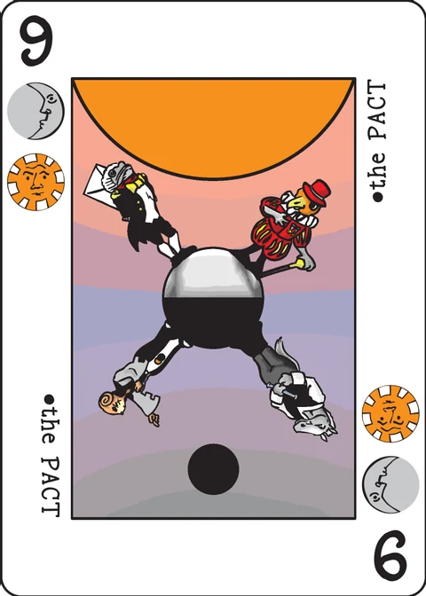

Dueling Runes
a game of spell casting and dueling
| Designed by | Jorge Arroyo |
|---|---|
| Players | 2 (works with 1–4) |
| Length | 20m |
| Extra material | Some markers, a die for each player |
Introduction
This game depicts a battle between 2 (or more) wizards that cast spells at each other by using magical runes with different symbols. Each suit in the decktet represents a rune. Cards can have from 1 to 3 runes that wizards can use in their spells.
Two types of runes
First, there are the Energy Runes: Suns, Waves and Leaves. These runes are used to power up different type of spells, but by themselves don't produce any effect.
Then there are the Activation Runes: Moons, Wyrms, Knots. They draw power from earlier energy runes to produce a variety of magical effects.
Basically, the type of activation rune determines how the energy is used, specifically:
- Moon Runes direct energy at the caster. These spells are usually about protection/healing
- Wyrm Runes violently direct the energy at a target. These spells usually damage the target in some way.
- Knot Runes weave the energy to create more elaborate spells that can be directed to anyone.
Spell Sequences
Each turn, players choose a card secretly and then reveal it at the same time. Each player then plays the card face up in front of them. If there are cards already on the table in front of them, the new card is placed over the old one but displaced a bit to the right, so the suits from older cards can be seen. This is the spell sequence.
The Runes from the cards a player has on the table can be used as energy for one spell that can be activated by an Activation Rune played on the current turn. So spells cannot be activated using activation runes from earlier turns, while energy remains and can be used for later turns. Multiple spells can be activated in a turn as long as they use different runes, so each energy rune can only power one spell up each turn and each activation rune can only activate one spell per turn.
There is a limit of 4 cards on the spell sequence, so older cards get discarded as new ones are played.
Setup
Shuffle the decktet (including pawns but leave the Excuse out). Place the excuse around the middle of the deck and then deal each player 5 cards. Leave the decktet within easy reach for all the players.
Each player gets a 12 sided die (or 12 generic markers) and places it in front of them showing the largest numbered side. The die represents the wizard's health points. (If players of different skill are playing together, consider lowering the starting health points for the more experienced player).
A variety of markers can be used to represent spell effects that remain for more than one turn. Color Beads, die, etc… (or just pen and paper).
Game play
Each turn all the players secretly choose a card (unless a player is "confused" see below). When everyone is ready they all reveal it simultaneously and place it on their spell sequence to the right of their last placed card, so that suits from all earlier cards can be seen.
After that, spell effects are resolved in this order: Moon Runes, Wyrm Runes, Knot Runes. If more than one player is casting a spell of the same type, the player that played the highest numbered card resolves their spell first. If two players activate a spell in the same phase with the same number on the card, they are considered simultaneous (so if both spells kill their targets, both players die and the game ends in a draw).
Spells are activated by specifying an Activation Rune from the card just played and stating what other energy runes from the whole spell sequence will be used to power it (including ones available on the card just played). If the last card played has two activation Runes or more, then more than one spell can be cast in this turn but each one must use different energy runes, as each one can only be used for one spell each turn.
Here are the spell effects for the Basic Game:
| Caster (Moons) | Enemy (Wyrms) | Spell (Knots) | |
|---|---|---|---|
| Sun | Resist Cold | Fire Ball | Haste |
| Waves | Resist Heat | Ice Bolt | Invisibility |
| Leaves | Heal | Drain | Amnesia |
| Nothing | Shield | Hit | Confusion |
Any activation rune + one other activation rune used as energy = Counter Spell
Any activation rune + the other two activation runes used as energy = Magic Mirror
- Resist Cold - The caster is immune to cold attacks for as many turns as activated Sun Runes. Player is protected starting this turn.
- Resist Heat - The caster is immune to heat attacks for as many turns as activated Waves Runes. Player is protected this turn.
- Heal - The caster immediately recovers as many health points as leaves activated.
- Shield - The caster is protected from: Hit, Confusion and Drain spells this turn
- Fire Ball - The target loses as many hit points as suns activated (unless protected from Heat)
- Ice Bolt - The target loses as many hit points as waves activated (unless protected from Cold)
- Drain - The target loses as many hit points as leaves activated and the caster recovers the same number of points (unless a Shield is in effect).
- Hit - The target loses one hit point (unless a Shield is in effect).
- Haste - The target gets to play two cards each turn for as many turns (starting next turn) as suns activated. The first card will be solved by the all the players under a haste spell first, and then the second one will be solved with everyone else. So players under this spell get an extra mini-turn to cast spells or play energy runes before the regular turn is solved.
- Invisibility - The target cannot get targeted by anyone else for as many turns as waves activated. Player is invisible starting next turn but might be protected on the same turn the spell is cast if targeted with a knots spell of a lower/equal value than the card used for this spell.
- Amnesia - The caster turns face down as many cards from the target's spell sequence as leaves activated. Caster can choose which cards. The face down cards remain in the sequence but cannot be used by the wizard. They leave play normally when enough turns have passed. Note that if due to timing rules the target of the Amnesia spell has his last played card turned face down before he was able to activate a spell with that card, that spell is lost (This can happen if it's a knot card with a lower value than the card used for the Amnesia spell).
- Confusion - The target has to randomly place his card next turn.
Special Spells
These two spells are casted with runes from the hand of the player. The player must discard a number of cards containing at least one of each required rune. These spells can be casted at any time during a turn.
- Counter Spell: The target of this spell will not be affected by spells cast on them (either by their opponent or themselves) this turn. This works for all Moons and Knots spells plus the drain spell (the other damaging spells do their damage by physical means).
- Magic Mirror: Any effect cast on the target is reversed and is instead applied to the caster with the original target being considered the new "caster". The reflected spell works normally and can be stopped by the usual spells, even a Counter Spell and another Magic Mirror (Fire Ball is still stopped by Resist Heat, etc…)
After all the activated effects have taken place, players draw up to 2 cards so their hand never exceeds the maximum total of 5 cards. Any player that has more than three cards on their spell sequence, must remove the oldest card (or cards) so that only three cards remain there. Then a new turn is started.
Whenever a player draws the Excuse, the remaining cards are shuffled together with the discard pile to make a new draw deck. Then the Excuse is placed around the middle of the deck.
The End
When only one living wizard remains, the game ends and that player wins the game.
Variants
Solitaire: The game can be played solo by playing the opponent's cards randomly from the deck. This may not make for a very challenging opponent, so players should start with fewer health points. Winning with only one health point can be challenging. Opponent spells should be decided fairly by the player when activated (so if the opponent has a choice between shooting a fire ball or an ice bolt and you are protected against heat, they won't choose a fire ball).
Also, if you confuse the random player, draw a card normally but if you don't like it, you can redraw once. The second card must be used.
My guidelines for the random player are:
| Moons | Suns | Knots | |
|---|---|---|---|
| 1-6 hp | heal then protection (depending on player's spell sequence) | attack only if can't use moons or knots defectively | only if can't heal: invisibility if possible, then haste. Else use wyrms if possible and if not, amnesia/confusion. |
| 7-12 hp | if not wyrms/knots then heal only if necessary, else protection or shield | attack if possible with most damaging spell | only if no wyrms: first agressive then defensive |
Multiplayer I think multiplayer games won't be a problem. The main difference is that there are more potential targets for offensive spells. Players should announce the targets as the spells are activated (in the correct order). The game gains a diplomatic aspect lacking in the 2-player version.
Note that if two or more players have to decide on a target simultaneously (because they used the same number on their played card) you can use some colored tokens to decide secretly and then show them at the same time.
Advanced Game: The advanced game has more spells that can be casted with combinations of energy spells. For example, a lighting bolt spell using sun and moons as energy and wyrm as activation. This variant is not yet done and ideas are welcomed.
Here's a posible table of advanced spells:
| Caster (Moons) | Enemy (Wyrms) | Spell (Knots) | |
|---|---|---|---|
| Sun + Waves | Summon Troll | Lightning Bolt | Electric Touch |
| Sun + Leaves | Summon Fire Elemental | Fear | Remove Enchantment |
| Waves + Leaves | Summon Ice Elemental | Poison | Magic Mirror |
| Sun+Waves+Leaves | Protection | Charm | Dispel Magic |
- Summon Troll - Brings a monster that sides with the caster. It has as many health points as Waves used and does as many damage points to a target of the owner's choice as suns were used to cast it. Hits can be deflected by the shield spell
- Summon Fire Elemental - Brings a monster that sides with the caster. It has as many health points as leaves used and does as many damange points to a target of the owner's choice as suns were used to cast it. Its attacks can be deflected by the resist heat spell.
- Summon Ice Elemental - Same as Fire Elemental but using waves instead of Fire
- Protection - The Caster is shielded (like with the shield spell) for as many turns as the number of suns, waves and leaves used for the spell.
- Lightning Bolt - Does as much damage to the target as the total number of suns used for the spell. Can only be countered with Counter Spell or Dispel Magic.
- Fear - For as many turns as leaves in the spell, the target cannot use a wyrm rune (too afraid to attack). If cast on a monster, the monster cannot attack.
- Poison - For as many turns as Waves in the spell, the target loses 1 point of damage per leaves in the spell
- Charm - For as many turns as Leaves in the spell, the caster plays a card (and draws one more at the end) instead of the target choosing a card. If cast on a monster, its owner changes to the caster.
- Electric Touch - For as many turns as waves on the spell, any physical attack on the target produces one point of damage to the attacker (applies to Hit and monster attacks). It doesn't prevent the damage to the target.
- Remove Enchantment - Any spells that are in effect on the target are removed. This includes Protection, Resist heat or cold, invisibility, etc… If casted on a monster, it disappears.
- Magic Mirror - Any spells that have been casted that turn on the target are applied instead to the caster. Reverse the effects of the affected spells and apply them to the new target. Example, Player A casts FireBall, and does 2 damage to player B. Then Player B casts Magic Mirror and recovers their 2 points while damaging player A with 2 points.
- Dispel Magic - Like Remove Enchantment but applies to everyone. All the monsters are removed from play too.
Note on this implementation
This app plays the solo form. You cast from your own rune sequence against a rival mage controlled by a stated policy (below), on the 44-card extended deck: everything but the Excuse, Pawns included, exactly as Setup describes. Both sides hold up to five cards and start on a d12 of health — rendered here as an HP counter. The wiki lets the solo player start with fewer hit points, so the app defaults you to 8 and the rival to a full 12, with 12, 8, 5 and 1 offered in a selector (1 is the wiki's "challenging" start).
Sequence size: 3, not 4. The wiki contradicts itself — the introduction says "There is a limit of 4 cards on the spell sequence", while the end-of-turn rule says a player "must remove the oldest card (or cards) so that only three cards remain there". This app follows the concrete end-of-turn rule: the sequence holds at most 3 cards (trimmed after every turn, oldest first, straight to the discard pile), so the 4-card limit never binds. Face-down (Amnesia'd) cards stay until the trim removes them.
Only the basic spell table is implemented — the twelve spells plus Counter Spell and Magic Mirror. The Advanced Game is explicitly unfinished on the wiki ("This variant is not yet done"), so it is left out and quoted above for reference only. Special spells are cast before the three phases, are always targeted at yourself, and are paid with the fewest hand cards that cover the required runes.
The rival's AI policy (the wiki asks that the opponent be chosen "fairly" and gives bracket guidelines for "the random player"): the app states one policy, deterministic for a given seed —
- Which card to play: each hand card is valued by what it can cast right now — 3× the damage it would actually deal after your resists and shield, plus sustain and control; at 6 HP or less sustain is weighted first (heal, then protect, attack last), at 7 or more damage is weighted first; cards with no activation rune are valued as fuel (they power future turns); ties break on a seeded random tied to the turn.
- Which spell to cast (decided as the phase resolves, so it never wastes an attack into your immunity): Wyrm = the energy that deals the most damage to you right now; Moon = heal first at 6 HP or less, otherwise Resist Heat if you can Fire Ball, Resist Cold if you can Ice Bolt, otherwise Shield; Knot = at 6 or less defensive (Invisibility, then Haste, then Amnesia, then Confusion), at 7 or more aggressive (Amnesia, Confusion, then Haste, Invisibility) — the wiki's own brackets.
- Special spells: it casts Counter Spell when it can pay and is at 5 HP or less, Magic Mirror when it can pay and is at 9 or less.
Targeting is fixed by the spell (the wiki lets Knot spells go "to anyone"): Moons and the protective Knots (Haste, Invisibility) land on the caster, Wyrms and the harmful Knots (Amnesia, Confusion) land on the rival. Amnesia turns the newest cards face down first — the timing case the wiki describes, where a Moons-phase Amnesia blinds the target's later activations in the same turn.
Energy is spent by the type, not the individual rune: each rune type powers at most one spell per turn and all visible runes of that type power it (Fire Ball for 2 uses both Suns). The wiki lets you split individual runes across spells; the app does not offer splitting.
Confusion draws a card from the deck at random (your redraw-once option is a button), and the Excuse is a rune-less card: drawing it reshuffles deck and discard into a new deck with the Excuse back in the middle, and the draw completes from the new deck — the wiki gives it no in-play effect. Haste gives its target an extra mini-turn: their first card resolves in a round of its own before the regular round, as the spell text says. Magic Mirror reflects a spell at most twice, so two mirroring mages send it back where it came from; physical attacks (Fire Ball, Ice Bolt, Hit) pass through Counter Spell exactly as its text allows.
Credits
The game was designed by Jorge Arroyo and is loosely based on Waving Hands by Richard Bartle. Thanks to P.D. Magnus and tsilver33 for playtesting the game.
Dueling Runes was designed by Jorge Arroyo. These rules are copied from the Dueling Runes page of the Decktet wiki (page revision 33, 7 February 2010) so that they can be read offline, and are used under the wiki's CC BY-NC-SA 3.0 licence. The cards themselves are by P.D. Magnus, 2008–2010, same licence.
Further reading: Dueling Runes at BGG · Dueling Runes in Pocket Mod format · Duelo de Runas (Spanish)